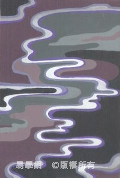
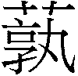

9 小畜卦 風天小畜
小畜，亨。密雲不雨，自我西郊。初九，復自道，何其咎？吉。九二，牽復，吉。九三，輿說輻，夫妻反目。六四，有孚，血去惕出，无咎。九五，有孚攣如，富以其鄰。上九，既雨既處，尚德載，婦貞厲。月幾望，君子征凶。
【卦名】
今本：小畜 帛書周易：少 歸藏：小毒畜 秦簡：少督 清華簡：少䈞 帛書易傳：小蓄 海昏：小畜
小畜、小蓄
畜的本義為畜養、豢養的意思，或指家畜。引申為儲蓄、積蓄、積聚。
《說文》：「田畜也。《淮南子》曰：玄田爲畜。」畜甲骨文作 ，上方為玄（即系，繫的意思），下方為，象有草木的一塊田地。徐中舒《甲骨文字典》：「田獵所得而拘系之，斯為家畜，此為玄田之正解。」因此「畜」字原指將所得獵物畜養起來，這是家畜或畜業的開始，也是最原始的「儲蓄」行為。
，上方為玄（即系，繫的意思），下方為，象有草木的一塊田地。徐中舒《甲骨文字典》：「田獵所得而拘系之，斯為家畜，此為玄田之正解。」因此「畜」字原指將所得獵物畜養起來，這是家畜或畜業的開始，也是最原始的「儲蓄」行為。
畜也是蓄的本字，亦可引申為積聚、儲蓄。小畜也可指積蓄、儲蓄、蓄積很小。《雜卦》：「小畜，寡也。」指人的資源、能量、錢財…都只有在小有累積與積蓄的時候，還不足以成氣候，因此說「寡」，就是少得可憐。畜養規模小，那麼所能儲蓄、蓄積的財產當然也就少。
帛書「小畜」卦名作「少」，但「大畜」作「泰蓄」，且在《易之義》中小畜作「小蓄」，大畜作「大蓄」。少同小，字應是「蓄」的異體字。
小竺、小篤
歸納秦簡的「少督」，歸藏「小毒畜」，以及清華簡的「少䈞」，都指向「篤」（竺）這個字，因為古文中督、毒、䈞，都與「篤」（竺）字互通。
馬國翰輯本《歸藏》作「小毒畜」，王寧認為卦名應是「小毒」，「畜」為內文混為卦名。于省吾《易經新證》以為毒即厚，通篤，篤厚的意思，「小毒畜即小厚積，大毒畜即大厚積也」。
而清華簡的䈞即篤的古字。《說文》：「䈞，厚也，从亯竹聲，讀若篤。」段注：「䈞篤亦古今字，䈞與二郭部竺音義皆同，今字篤行而䈞竺廢矣。公劉《毛傳》曰：篤，厚也。此謂篤卽竺䈞字也。」依段注，篤、竺、䈞互通，都是「厚」的意思，篤字通行之後竺、䈞兩字就不再使用。
上博簡雖無小畜卦，但大畜作「大 」， 為「竺」的繁化，通竺。
」， 為「竺」的繁化，通竺。
秦簡「少督」的督亦通篤，如《書．微子之命》「篤不忘」孔傳：「篤，本又作竺。」孔穎達：「僖十二年《左傳》王命管仲之辭曰謂督不忘，則曰亦謂義。孔訓篤為厚，故傳云謂厚不可忘。」
從這些出土資料及古典可歸納出，小畜卦名古可能通「小篤」或「小竺」，大畜為「大篤」或「大竺」。大畜卦《彖傳》曰「大畜，剛健篤實」，可能是古卦名「篤」（竺）的遺痕。
篤，厚實、穩固也。篤原意為馬行遲頓，但後來用以替代竺字。竺為厚實之義，篤字現今也多做厚實解，我們常說的篤實、篤厚。段玉裁：「古假借篤爲竺字，以皆竹聲也。二部曰：竺，厚也。篤行而竺廢矣。《釋詁》曰：篤，固也。又曰：篤，厚也。《毛詩》椒聊、大明、公劉傳皆曰：篤，厚也。凡經傳，篤字固厚二訓足包之。《釋詁》篤竺並列，皆訓厚。《釋名》曰：篤，築也。築，堅實稱也。厚，後也，有終後也。蓋篤字之代竺久矣。」
大篤即非常篤實、厚實，基礎很穩固，《彖傳》講的「剛健篤實」。而小篤或少篤則是不夠篤實，不踏實，不夠穩固之義。此亦與「小畜」、「小蓄」之義互為表裡，畜養小者基礎就不夠厚實。
《易之義》子曰：「小蓄者得之未內也。」「小蓄之密雲…五繇者，陰之失也，靜而不能僮者也。」都是小畜卦的很好註腳。「未內」，即「未入」，得到了而不能納入，即有得而不穩固。「僮」即「動」，小畜有陰之失，靜而不能動。
【卦義】
小家畜，儲蓄少，不夠篤實。
卦象為「風在天上」，上巽為木，為風，為申命、為漸入，為散；下乾為天，為剛健，為金玉，為篤實、為君子。乾在內本為陽氣積畜之象，但外有風散之（《說卦》「風以散之」），積畜之陽氣為風所吹散，故曰小畜。反之，若外有艮山養之，則為大畜卦。
小畜也有剛健不果行之象，巽為不果、進退，下乾陽君子進退不果。
上巽風為命令（王命），巽風在天上而不在地下，只能天馬行空，命令未能下達，無法像觀卦一樣風行地上、下達百姓，成風行草偃的功效。因此小畜又有申命未達而無功之象。
乾為金玉，乾在內為儲蓄之象，但外巽散之，則儲蓄變少，因此為小蓄。反之，若以艮山養之藏之，則為「大儲蓄」。陽為實，乾為三陽為篤實，外巽散之，則穩固、篤實之基礎受到侵擾，因此為「小篤」，基礎受到動搖之象。反之，若以艮山養之，則篤實成「大篤實」，即「大篤」。
乾為君子為大人，巽風逐之擾之，巽又為不果，因此小畜為君子不得志、不得養之象；上卦若改以門闕（艮）將君子納於門下，則為君子得志得養之象，就成大畜。
就「爻」象來看，小畜也有陰氣積畜之象。《易經》中以陽為大，陰為小，小畜可理解為陰氣積畜。此陰指六四，六四為上巽風之初爻，姤卦一陰歸來在五陽之下為「女壯」，意指陰氣將大壯用事。小畜陰氣為乾體與坤卦旁通而來，坤初至乾四，陰氣自上卦初爻而出，陰氣積畜於陽中。《彖傳》說「柔得位而上下應之，曰小畜」，意指小畜主爻六四得位，下與初九相應，上也與九五比應。
《序卦》：「比必有所畜，故受之以小畜。物畜然後有禮，故受之以履。」小畜是繼師比兩卦而來，與履卦為相綜的一對卦。比卦為眾多小人比附君子，眾陰比附之後開始有如何畜養它們的問題，即為小畜卦。
一般而言，得小畜卦由於積畜與資源少，基礎不是很厚實，事情多不明確而讓人有疑慮，因此只可做小事，不可做大事；可出行，但不利出遠門；凡事宜回到原點從新開始，不宜有積極的鴻鵠之志。
相對於「大畜」的「不家食」，也就是不在家飼養，小畜全卦以「復」為主軸，「復」也就是回家的意思。這個主軸若以帛書本來看會更加清晰，初九言「復自道」，九二「堅復」（牽復），九三「車說緮，夫妻反目」，六四「有復」（按：帛本「孚」皆作「復」），九五「有復」。
所以大畜是離家畜養，小畜則是回家、在家畜養，在家畜養則所畜者小，因此稱小畜。
小畜，亨，密雲不雨，自我西郊。
- 彖曰：小畜，柔得位而上下應之，曰小畜。健而巽，剛中而志行，乃亨。密雲不雨，尚往也；自我西郊，施未行也。
- 象曰：風行天上，小畜，君子以懿文德。
- 易之義：◎小蓄者得之未內也。 ◎川之牝馬、小蓄之密雲、句之［適］屬、漸之繩婦、肫之泣血，五繇者，陰之失也，靜而不能僮者也。
【今解】
小積畜，匯聚良好之條件。雖然雲層很厚，但卻遲遲不下雨，雲從我家鄉西邊的郊區聚集而來。
密雲不雨比喻心中充滿疑惑、擔憂很深，擔憂的是家鄉事。西為周之發源地，因此西郊比喻家鄉。小畜全文以「復」（回家）為主軸，由此可證「密雲不雨，自我西郊」講的乃是心繫家鄉有事而急欲回鄉之事。
雨在《周易》中又象徵乾陽之作用，此乾卦《彖傳》所說的「雲行雨施，品物流形」，益卦說的「天施地生」。乾道主施，坤道主生，雨則是象徵乾坤造物，傳統儒者視其為陰陽和合。「密雲」則是雨未施之時，象徵天德未行，大道未通。
《彖》曰「柔得位而上下應之，曰小畜」，指六四以柔居柔，當位。上承二陽，下應初九，為「上下應之」，一陰為眾陽所畜之象。比卦為眾陰親比、比附，小畜則將它畜養起來，陰為小，故稱小畜。「健而巽」講二體卦象，下乾健，上為巽。剛中而志行乃亨，剛中指九二乾之中爻。為何說九二「志行」，後又言「尚往」？
乾《彖傳》說「大哉乾元，萬物資始，乃統天。雲行雨施，品物流形。」乾元資始萬物，是以「雲行雨施」來表現，以卦爻的變化來說，就是乾與坤旁通，讓坤體得震雷與坎水，具體而言就是成為屯與解兩卦，則雲行雨施。因此屯卦彖傳說「雷雨之動滿盈」，解卦彖傳說「天地解而雷雨作，雷雨作而百果草木皆甲坼」。「密雲不雨」則是指乾四至坤初成復與小畜，復為陽復（陽爻歸來），小畜則是陰畜（陰爻畜止）。小畜九二若再到復五，復變為屯，小畜變為家人，屯則「雷雨之動滿盈」而雲行雨施，家人卦則陰爻返家而家道正。總而言之，「密雲不雨」講的也是乾四之坤初成復而「施未行」之時。「密雲不雨，尚往也；自我西郊，施未行也」，「尚往」講的是九二當往復五，則成屯而雲行雨施。後言「施未行」講的是九二未行，而未能雲行雨施，因此是「密雲不雨」。
【字義】
密雲不雨：比喻心中疑惑很深，天道窒塞未通，君子不得志。睽卦上九「遇雨則吉」，《象》曰：「遇雨之吉，群疑亡也。」《周易》的「雨」具有特殊的象徵意義，代表的是乾坤造物，天道流行。相對的，雲也就是「不雨」，代表的是大道未行之時，因此也有君子不得志之義。但「密雲不雨」之象到底從何而來？兌與坎同為水，坎為地上流的水，上於天則成雲。兌為天上來的水，即雨，下於地則成澤。「密雲不雨」之象應來自於互體的兌，兌卦未能直上天際，上有巽風為不果。小過卦六五亦曰「密雲不雨」，六五正是互體兌卦的上爻。夬卦九三爻曰「遇雨若濡」，因九三爻在兌下，爻變之後又成下兌之上爻為濡。以上是就卦象觀點來看。就六十四卦的演生觀點來看，密雲不雨指的是乾卦與坤卦旁通，只有「雲行」而尚未「雨施」。益卦彖傳說「天施地生」，乾彖說「雲行雨施，品位流形」。乾道始物造物的生生之德，就卦象來說表現在屯與解兩卦，小畜為陰氣畜止，陽元（原本的乾卦九四）動於坤下，未成屯，因此曰「密雲不雨」，只有雲行。小畜九二至復五成屯與家人之後，才真正「雨施」。
自我西郊：我，問筮者、周王之自稱。周於西方。「密雲不雨，自我西郊」，謂我周地郊區上空陰雲密布，比喻對於家鄉有事而感到憂慮與疑惑。朱熹：「畜未極而施未行，故有密雲不雨，自我西郊之象。蓋密雲，陰物；西郊，陰方。我者，文王自我也。文王演易於羑里，視岐周為西方，正小畜之時也。」荀爽：「體兌位秋，故曰西郊也。時當收斂，臣不專賞，故施未行。喻文王也。」
懿文德：「懿」傳統解釋為美。《說文》：「專久而美也。」懿之美，在於能夠專一而持久。小畜乃大道不行，君子志未通的時候，此時當專一而堅持於文明之德。小畜與豫為陰陽相反的兩卦，小畜為寡，豫為餘、裕。小畜是密雲不雨，宜於懿文德；豫利建侯行師，重門擊柝以待暴客，宜於行武德。
初九，復自道，何其咎？吉。
- 象曰：復自道，其義吉也。
【今解】
走大道回家。回歸正途，走自己的路，有什麼罪咎可言？吉。
復為回家。小畜卦六爻以「復」為主軸，為什麼？乾與坤旁通至屯與家人過程當中，先是陽復（復卦）與陰畜（小畜）。就乾元來說，九四至坤體成復，因陽爻生於初，為陽元復反坤體大地之下。但坤初上行至乾體之四，成小畜，為坤元畜止於乾體之中，坤元迷途，因此需找到回家的路。當復五至小畜二之後小畜成家人而「男女正」、「家道正」，即回到家。這也是坤卦講的「先迷後得」。
董仲舒《春秋繁露》：魯桓忘其憂而禍逮其身，齊桓憂其憂而立功名。推而散之。凡人有憂而不知憂者凶，有憂而深憂之者吉。《易》曰：「復自道，何其咎。」此之謂也。匹夫之反道以除咎尚難，人主之反道以除咎甚易。《詩》云：「德輶如毛。」言其易也。
【字義】
復：回家，回復，回歸，返回，引申為迷途知返，改過遷善。《周易》中「復」原本為一卦，有其特殊意義，為陽氣（陽爻）復返歸來，也有改過遷善的意思。小畜的「復」，則是指六四主爻為坤元迷途畜止而必需找到回家的路，因此在乾坤旁通歷程當中，小畜九二再與復卦六五交換成家人，小畜成家人就是回到家。這也是坤卦「先迷後得」的「先迷」歷程，成家人卦則是「後得」。
復自道：有兩種解釋，一是走大道回家。復，回家。自，從、由。道，《說文》：「所行道也」，「一達謂之道」。道為「一達」，相對於衢之「四達」。道引申為大路，人當走之路，因此道家講「道德」，以道為人所當行者。乾為道，故稱復自道。「復自道」也可解釋為回到自己走的道路，迷途而返的意思，所以當然可以順利到達目的。自為自己，自道為自己的道路。此比喻君子回歸到自己的原則。
九二，牽復，吉。
- 象曰：牽復在中，亦不自失也。
【今解】
牽引而回家，吉。
比喻君子能夠攜手相助，不為小人所制，因此為吉。
【字義】
牽復：謂陽氣彼此牽引而歸來。初、二、三爻，連續三爻為陽為「牽引」之象。三個陽爻相互牽引，九二居中是能夠繫引諸陽爻者，為牽復的中間之主。初九當位，復自道，所以吉；九二剛中而能夠牽引陽氣，所以亦吉。小畜九二曰「牽復」說的是三陽相連，泰初九與否初六曰「拔茅茹以其彙」描繪拔茅草時根根相連而起，也是取三陽爻及三陰爻相連之象。剝卦六五「貫魚以宮人寵」，「貫」取五陰相連之象。牽復亦可解釋為牛羊馬豬等牲畜回家。凡牛、羊、馬、豬等可以牽著走的牲畜，都可稱牽。《周禮》「賓賜之飧牽」，鄭注：「牽，牲，牢可牽而行者。」
九三，輿說輻，夫妻反目。
- 象曰：夫妻反目，不能正室也。
【今解】
用來固定車輪軸的革繩或伏兔脫落，夫妻兩人反目成仇。
三為多凶之位，又居互體兌中，有脫象。夫妻反目成讎，有如車輪輹脫落，無法行走。所以象曰：「夫妻反目，不能正室也。」
輿象徵眾，民心。輿脫輻而車不可行，亦象徵君德不行而失民心。
【字義】
輿說輻：通行本作「輿說輻」，應當作「輿說輹」，用來固定車輪軸的革繩脫落，當然不可行。輿，車子。說，脫，脫離，鬆脫的意思。輹通行本作輻，應作輹。朱震：「子夏傳、虞翻本輻作輹，當作輹。」帛本作緮，大畜九二作「輿說輹」，《說文》：「車軸縛也，从車复聲，《易》曰：輿脫輹。」段注：「謂以革若絲之類纏束於軸，以固軸也。縛者、束也。」「《周易》小畜九三、大畜九二文也。馬云：車下縛也，與許合，其非轐明矣。或作腹者叚借字，或作輻者譌字。」依許說及段注，輹為皮革做成的繩子，用以繫緊及固定車輪軸。虞翻：「坤爲車，爲輻。至三成乾，坤象不見，故車說輻。馬君及俗儒皆以乾爲車，非也。」鄭玄：「謂輿下縛木，與軸相連。鈎心之木是也。」「伏菟也。」另有一說以為此處當做輿脫輻，輻與輹不同。胡炳文：「大畜九二輿説輹，輹與輻或據《左氏傳註》以爲通用，何也？曰：《説文》，輹，車下横木，非輻也。大畜九二說輹，剛而得中，自止而不進也。小畜九三説輻，剛而不中，止於陰而不得進也。說輹可復進，說輻則不可以行矣。」觀小畜六爻，以「復」（复）為主軸，「中孚」在帛書本亦作「中復」，依理此處「輻」當為「輹」才是。
六四，有孚，血去惕出，无咎。
- 象曰：有孚惕出，上合志也。
【今解】
有誠信，血流去，恐懼除，無罪咎。
小有血光之災，雖會流點血，歷經恐懼，但能夠免於罪咎。四為近君多懼之位，又為互體兌卦之上爻，因此有憂慮驚險之象，但只要秉持誠信，恐懼自能消除，不會有事。
六四爻以柔居陰，上承九五，為順，下又應初九之君子，故惕出。
【字義】
有孚：孚為誠信，信實。
血去惕出：王弼曰：「夫言血者，陽犯陰也。」王弼認為，六四阻擋了九三的去路，並凌駕陽剛的九三之上，所以言「血」。王弼說法相當奇怪，陰陽爻之間的乘承關係理當有上下體之別，六四的乘承應與五爻合觀，因此《象》傳說「上合志」，言六四承九五。另一說以「血」為「恤」，憂慮之義。馬融：「血當作恤，憂也。」惕，恐懼。《象》曰：「有孚惕出，上合志也。」意思是說，六四承九五，合上面九五陽爻之志，所以有孚惕出。虞翻：「逸坎爲血，爲惕。惕，憂也。震爲出，變成小畜，坎象不見，故血去惕出。」此以伏象解釋血去惕出，六四居互體離卦之中，離下伏坎，坎為血為憂，坎象不見，所以說是血去惕出。渙卦上九「渙其血去逖出」，惕與逖同音之假借，逖同逷，遠也。逖出，遠出。
九五，有孚攣如，富以其鄰。
- 象曰：有孚攣如，不獨富也。
【今解】
有誠信又能彼此攜手相連，因鄰居間共同合作而富有。
九五居上體巽卦中爻，巽為繩、係，攣之象；巽為利市三倍，富之象。泰六四及謙六五皆曰「不富以其鄰」，都有震象，震伏巽，巽象不見，故曰「不富」。
【字義】
有孚攣如：以誠信攜手合作。攣：音巒，相繫，連繫。《說文》：「係也。」段注：「係者，絜束也。《易》小畜：有孚攣如。馬曰：連也。虞曰：引也。攣者係而引之，其義近擢。」孚也可解釋為俘，俘虜。有俘攣如，俘虜綁在一起而牽繫的樣子。
富以其鄰：有多種可能的解釋，這裡採用第三種。一、以為及，富及其鄰，財富及於鄰居，言財富能與鄰居分享。《象》曰：「有孚攣如，不獨富也。」意思說，不獨享財富。二、以財富來驅使鄰居，以錢財來誘使鄰居幫忙做事。傳統將「以」解釋為用，引申為左右、驅使。朱熹：「用富厚之力而以其鄰之象。以，猶《春秋》『以某師』之『以』，言能左右之也。」。富以其鄰為誘之以利，不富以其鄰為導之以義。三，「以」解釋為因為，富有是因為鄰居的緣故，講的可能是與鄰居彼此能夠相助，並因此而致富。有孚攣如為鄰居和睦之狀，能夠彼此信賴而攜手相連。此有如社區經濟，同一社區之鄰里共同打造一個產業，而共同享有財富。或指鄰國之間相安無事，彼此合作，因此兩國都得國富民安。但高亨將他詮釋為偷竊鄰居之財物因此而致富；而「不富以其鄰」則是因為被鄰居所偷竊所以不富。因此有孚攣如是指偷竊鄰居財物而被拘禁。有孚即「有浮」，「有罰」的意思。攣如則是被拘繫，被綁起來的意思。
上九，既雨既處，尚得載，婦貞厲。月幾望，君子征凶。
- 象曰：既雨既處，德積載也；君子征凶，有所疑也。
【今解】
雨已經下了，就好好停下來休息，希望車子得以運載準備出行，婦女堅貞而艱苦。已近月圓之時，君子出征不利，凶。
上九小畜已終，卦辭開始言密雲不雨，終則變為雨。上爻爻變成需，需本義為雨中等待，乃有待而行之義。所以不利於出征，出征為凶。
「尚得載」為希望車子已能夠承載，此乃幾近可以出行而仍不得出行，就如月亮幾近月圓而尚未圓。心中仍有疑雲，因此可近不可遠，遠行則凶，故曰征凶。爻變上卦成水，故言既雨。坎也是心病，故有疑象。
《漢書‧五行志》引《京氏易傳》：「『婦貞厲，月幾望，君子征凶』， 言君弱而婦彊，為陰所乘，則月並出。」
【字義】
既雨既處：既，已經。雨，上九爻變之後巽變為坎，坎為水，故云既雨。處，停止，休息。既處，停下來休息。在全卦脈絡下，坎在上為雲，但若單就爻來看，坎為水。既雨既處，既然已經下雨，就停留下來休息。
尚得載：「尚得載」今本作「尚德載」，得、德兩字古相通。帛書、阜陽簡，京氏與虞翻，皆作「尚得載」。九三言輿脫輹，車子損壞不得出行。這裡言「尚得載」，言車子已近修好即將可承載，但仍不可承載。《詩．大東》：「薪是穫薪，尚可載也。」「尚得載」即「尚可載」。尚，《說文》：「曾也，庶幾也。」《爾雅》：「庶幾，尚也。」尚為差不多，將近，表期待、希望之辭。傳統上多把尚解釋為上。如虞翻「上得積載」，指車子上面已得以積載貨物或人員，能夠出行。或以尚為崇尚，以德為道德、德行，如孔穎達：「慕尚此德之積聚而運載也。」朱熹：「尊尚陰德，至於積滿而然也。」然而比對後文「月幾望，君子征凶」，尚應作庶幾解，代表期望之辭，車子雖已近乎得以積載，但卻仍未能積載。因此「征凶」。
婦貞厲：厲，危厲、艱難。貞，堅定的意思。婦貞厲，女堅定、堅貞而艱苦。「婦貞厲」相對於「月幾望，君子征凶」，此爻對於男或女、君子或小人、大人或百姓會有不一樣的吉凶與對策。婦女、小人的話堅貞而危厲。如若是大人、君子，則不利於出征，以守靜為吉。
月幾望：月亮已近月圓。望，月圓，比喻圓滿。月幾望，比喻事情已近圓滿但又不圓滿。中孚六四「月幾望，馬匹亡」，此言「月幾望，君子征凶」，則「月幾望」為不利出征、遠行之象。《開元占經》引《河圖帝覽嬉》曰：「月未當望而望，是謂趣兵，以攻人城者大昌。當望不望，以攻人城者有殃，所宿之國，亡地。」月幾望，是月當望而未望，為出征有殃之象，故曰征凶。「月幾望」比對前文「尚得載」可證「尚」應作庶幾解。
【彖傳注】
小畜，柔得位而上下應之，曰小畜：以主爻解釋小畜卦義。小畜是由乾坤旁通而來，乾四與坤初的旁通分別形成「陽復」與「陰畜」兩卦。乾卦九四至坤初，成小畜與復。小畜六四為坤初六而來，當位而與初九相應，又與九五比應，因此曰「柔得位而上下應之」。小為陰，小畜即陰畜，指坤初六之陰畜於乾體之四。而乾四至坤初則成復，復者陽氣之歸來，乾元由卦之初而生起。
健而巽：上下二體之卦德，下乾剛健，上為巽。小畜為健而能入之德。
剛中而志行，乃亨：指九二，剛中而志在必行乃能亨通。小畜再與復旁通，九二至復五成屯與家人，屯卦則「雷雨之動滿盈」，乾陽雲行雨施而亨通。家人卦則男女正，家道正。
密雲不雨，尚往也：九二未行，因此密雲而不雨。九二往復五成屯則成雨，因此曰「尚往」。
自我西郊，施未行也：六四互體兌為西，故曰自我西郊。施未行，施指的是乾卦《彖傳》「雲行雨施」之「雨施」，因九二未至復六二，尚未成屯卦之雨，成屯則「雷雨之動滿盈」為雲行雨施。九二未行而未能「雨施」，因此言「施未行也」。